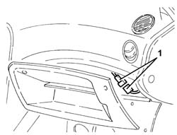
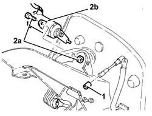
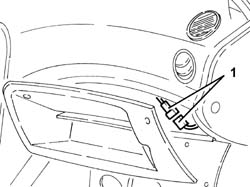
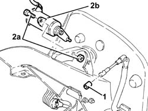

1068A50 accelerator potentiometer - r+r
- Path
- Procedures > 10 ENGINE > 1068 ACCELERATOR CONTROLS > 1068A accelerator pedal control > 1068A50 accelerator potentiometer - r+r
- Kind
- repair procedure (removal / refitting; the operation number is the code)
- Applies to
- engines: 2.5 V6, 1.9 JTD 8v , 2.4 JTD 10v; all production periods
- Interactive page
- https://sloeber94.github.io/elrnDB-a156/en/#/3237552
Applies to: engines: 2.5 V6; all production periods; only with equipment: Heater
 Removing
Removing
 Refitting
RefittingMake sure that the ignition is off (STOP position), then disconnect the negative battery terminal (refer to op. 5530A10 alternator - r+r )
 | Name | Connector |
|---|---|---|
- | Battery |
7040A65 passenger compartment box lock , one , r r .
1. Disconnect the electrical connection for the accelerator pedal potentiometer.
Release the potentiometer electrical wiring on the accelerator pedal from the securing bands and withdraw towards the pedal unit.

Applies to: engines: 2.5 V6; all production periods; only with equipment: Heater
1060G42 clutch pedal switch - r r .
1. Remove the clip and withdraw the accelerator pedal link from the potentiometer.
2. Undo the bolts (2a) and remove the accelerator pedal potentiometer (2b).

Applies to: engines: 2.5 V6; all production periods; only with equipment: Heater
Refitting
RemovingFit the accelerator pedal potentiometer and secure with its bolts.
Connect the accelerator pedal link to the potentiometer and secure it with its retainer.
1060G42 clutch pedal switch - r r .
Place the potentiometer electrical wiring back in its seating and fix it to the bands.
Connect the electrical connection of the accelerator pedal potentiometer.
7040A65 passenger compartment box lock , one , r r .
Connect the negative (-) battery terminal.
After refitting the accelerator pedal potentiometer, adjust it as described below.
Make sure that the ignition key is in the OFF position.
Connect the tool to the diagnostic socket and place the knob in position 3.
 | Name | Country |
|---|---|---|
- | MPX 97 switch | 1.806.365.000 |
Connect the Examiner diagnostic equipment.
Turn the ignition to the ON position.
Using the Examiner, enter the 'Parameters' environment.
Press 'Selection' and select the 'Accelerator position track 1' parameter.
Check that the potentiometer's calibration conform to the specified values:
- during idling (accelerator pedal released), 8% ± 1%
- fully open (accelerator pedal fully depressed), 64.3% ± 1%.
If the setting is not as specified, adjust the accelerator pedal travel by means of the accelerator pedal travel stop screw beneath the pedal.
Remove the diagnostic equipment.
Applies to: engines: 1.9 JTD 8v , 2.4 JTD 10v; all production periods
Removing
RefittingMake sure that the ignition is OFF (STOP position), then disconnect the negative battery terminal (refer to op. 5530B10 battery - r+r ).
| Name | Connector |
|---|---|---|
- | Battery |
7040A65 passenger compartment box lock , one , r r
1. Disconnect the electrical connection for the accelerator pedal potentiometer.
Release the electrical wiring for the potentiometer on the accelerator pedal from the collars and withdraw towards the pedal unit.

Applies to: engines: 1.9 JTD 8v , 2.4 JTD 10v; all production periods
1060G42 clutch pedal switch - r r
1. Remove the clip and withdraw the accelerator pedal link from the potentiometer.
2. Undo the bolts (2a) and remove the accelerator pedal potentiometer (2b).

Applies to: engines: 1.9 JTD 8v , 2.4 JTD 10v; all production periods
Refitting
RemovingFit the accelerator pedal potentiometer and secure with its bolts.
Connect the accelerator pedal link to the potentiometer and secure with the clip.
1060G42 clutch pedal switch - r r
Place the accelerator pedal potentiometer electrical wiring back in its seating and fix it to the bands.
Connect the electrical connection of the accelerator pedal potentiometer.
7040A65 passenger compartment box lock , one , r r
Connect the battery terminal (-).
Connect Examiner and check the throttle valve calibration parameters. If the values are not within recommended limits, regulate the accelerator pedal travel adjustment bolt found under the pedal itself.